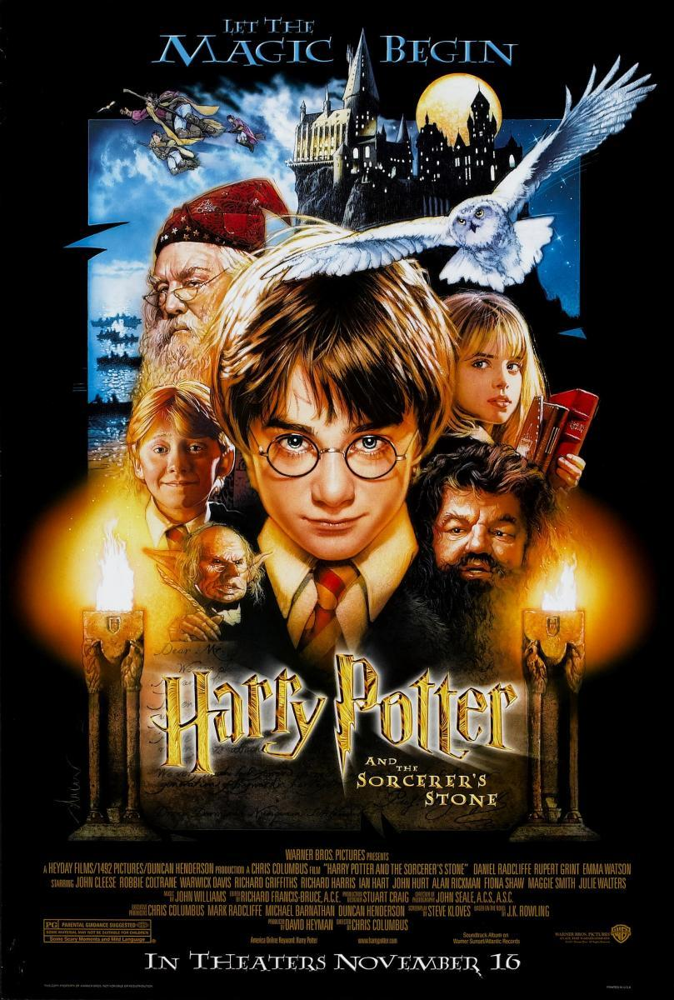

Harry Potter y la Piedra Filosofal
Fue la primera película de la saga y se estrenó en 2001. Fue dirigida por Chris Columbus. En esta película, Harry descubre que es mago y comienza su primer año en Hogwarts. Allí conoce a Ron y Hermione, aprende sobre hechizos, pociones y criaturas mágicas. También descubre la existencia de la Piedra Filosofal, un objeto mágico capaz de otorgar la inmortalidad, y deberá impedir que Voldemort la consiga.
Datos importantes
- Año de estreno: 2001
- Director: Chris Columbus
- Duración: 152 minutos
- Personajes principales: Harry, Ron, Hermione, Dumbledore y Snape
